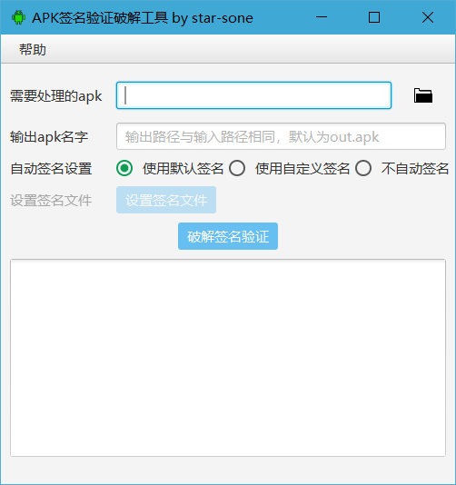
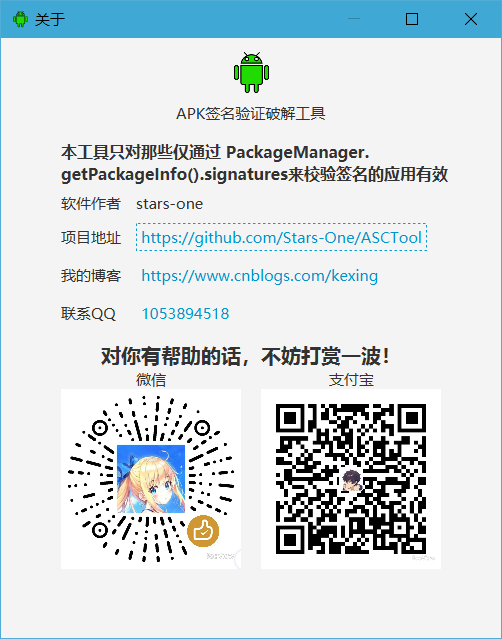

stars-one的原创工具——APK签名验证破解工具原文出处:本文由博客园博主Stars-one提供。
原文连接:https://www.cnblogs.com/kexing/p/11567136.html
APk签名验证破解工具 APK Signature Crack Tool
本工具只对那些仅通过 PackageManager.getPackageInfo().signatures 来校验签名的应用有效。
基于JavaFx框架，使用Kotlin语言实现
软件界面


下载
码云下载
使用
1.安装jdk（jdk1.8+）